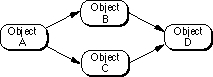

Legacy Document
Important: The information in this document is obsolete and should not be used for new development.
Important: The information in this document is obsolete and should not be used for new development.


Dependencies
MacApp provides a dependency mechanism that allows objects to be registered as dependents of other objects and to be notified of changes in the objects on which they depend. Dependency management can be useful in many situations, including synchronization of multiple views of the same data and handling of complicated interactions between the controls in a dialog box.An object that has one or more dependent objects is called a notifier. When a notifier changes, it informs its dependent object(s) of the change. An object that has been registered as depending on another object is called a dependent. A dependent is notified of changes in the object on which it depends.
An object can have multiple dependents and multiple notifiers, and one object can be both a notifier and a dependent.
The following sections describe
Figure 26-1 on page 587 shows some of the classes and methods that provide dependency support in MacApp.
- how to perform basic operations on dependencies
- how to store dependency relationships
- how to establish and remove dependencies
- how to iterate over an object's dependents and notifiers
- how command objects perform change notification
- how MacApp's dependency-updating algorithm works
Basic Operations on Dependencies
As a user of the dependency system, your application only needs to know about four basic dependency operations, each of which is supported by a method of theTObjectclass:
For more information on the dependency-related methods of the
- Adding a dependent. You call
objectOne->AddDependent(objectTwo)to establish a dependency relationship betweenobjectOneandobjectTwo. After the call,objectTwobecomes a dependent ofobjectOneandobjectOnebecomes a notifier with regard toobjectTwo.For example, a view class may call
AddDependentin itsDoPostCreatemethod to make the view a dependent of its document object:
fDocument->AddDependent(this);- Removing a dependent. You call
objectOne->RemoveDependent(objectTwo)to remove the dependency relationship betweenobjectOneandobjectTwo.- Informing an object it has changed. You call
objectOne->Changed(...)to tellobjectOnethat it has changed and should notify its dependents. When theChangedmethod of an object is called, its dependents are notified by having theirDoUpdatemethod called.- Responding to a change notification. You define an override method TYourClass
::DoUpdateto respond to changes in a notifier. (As a result,objectTwo::DoUpdateresponds to notification byobjectOne.)
TObjectclass, see "Dependency Relationships," beginning on page 38.Storing Dependency Relationships
A dependency space stores dependency relationships between objects and encapsulates a mechanism for notifying dependent objects when an object changes. MacApp definesTDependencySpaceas an abstract superclass for dependency spaces and defines two subclasses,TSimpleDependencySpaceandTStandardDependencySpace.These classes are discussed in more detail in "Updating Algorithms," beginning on page 47.By default, a MacApp application has one dependency space, referenced by the global variable
gMacAppDependencies. This instance is created in theTApplicationmethodDoMakeDependencySpaceand defaults to an object of typeTStandardDependencySpace. The default dependency space can be accessed using the methodTObject::GetDependencySpace.Establishing and Removing Dependencies
A dependency can be established between two objects by calling theAddDependentmethod of the object that is to be the notifier or by directly calling theAddDependencymethod of the dependency space (normallygMacAppDependencies).A dependency between two objects can be removed by calling the
RemoveDependentmethod of the object that is the notifier or by directly calling theRemoveDependencymethod of the appropriate dependency space (normallygMacAppDependencies).The
TObjectclass supplies methods for removing all dependencies involving a given object as either a notifier or a dependent. For example, theFreemethod ofTObjectcalls theRemoveDependenciesOnFreemethod and, if that method returnsTRUE, callsRemoveAllDependencies. TheRemoveAllDependenciesmethod removes all dependency relationships that involve the freed object, either as a notifier or as a dependent, from the object's default dependency space.As a performance optimization,
RemoveDependenciesOnFreecan be overridden to returnFALSEfor objects that are never involved in dependency relationships. MacApp does this for its frequently allocatedTToolboxEventobjects.Iterating Over Dependents and Notifiers
MacApp provides the iterator classesCDependentIteratorandCNotifierIteratorfor iterating over the dependents or notifiers of a given object. The constructors of these iterators take a dependency space as an argument. For an example of how iterators are used, see Chapter 25, "Working With Lists and Iteration."Change Notification and Command Objects
MacApp uses its dependency notification mechanism when performing commands. A command-handler object'sDoPerformCommandmethod calls the command'sDoItmethod, then calls the command'sDoNotificationmethod.TheTUndoRedoCommand::DoItmethod also calls the command'sDoNotificationmethod, so notification takes place for undo and redo as well.When you initialize a command object, you pass it a reference to an object to notify and the
fObjectToNotifyfield is set to this reference. TheDoNotificationmethod of theTCommandclass callsfObjectToNotify->Changed, passing a change ID obtained from the command object. This process gives the command the opportunity to notify its dependents. The default change ID passed is either the command number orcUndo.For example, when the object to be notified by the command is a document object, the
Changedmethod of theTDocumentclass adjusts the document object's change count, and callsInherited::Changedto notify dependents.Updating Algorithms
Your application informs an object that it has changed by calling itsChangedmethod or by calling theNotifierChangedmethod of a dependency space. TheChangedmethod ofTObjectcalls theNotifierChangedmethod of the object's default dependency space.The updating algorithm for MacApp's dependency mechanism is encapsulated in the
NotifierChangedmethod of a dependency space. The key to this algorithm is that theDoUpdatemethod of each dependent object is called.Your application can control the updating algorithm by specifying the type of dependency space used:
TSimpleDependencySpace,TStandardDependencySpace, or a subclass of your own. MacApp's default dependency space is an object of typeTStandardDependencySpace. To change the dependency space, you override theTApplicationmethodDoMakeDependencySpace.TSimpleDependencySpace
The simplest approach to notifying dependents of changes in their notifiers is to call theDoUpdatemethod of each immediate dependent of an object that changes. To propagate the update notification to dependents of dependents, objects would have to explicitly callChangedin their overrides ofDoUpdate. Suppose object A has dependents B and C, which each have object D as a dependent, as shown in Figure 3-1.Figure 3-1 Dependency relationship

Calling the
Changedmethod of object A results in a call to theDoUpdatemethod of each of its dependents, object B and object C. Object B and object C must in turn callthis->Changedto notify object D.An advantage of this approach is that the algorithm is reentrant--you can call
Changedfrom code that is called byDoUpdate. However, a disadvantage is that it can be inefficient: since there are multiple paths from object A to object D, object D gets twoDoUpdatecalls. In more complicated dependency graphs, numerous unnecessary updates of the same object can occur. Another disadvantage of this approach is that a cycle in the dependency relationship (for example, object A depends on object B, B depends on C, and C depends on A) will lead to an infinite loop ofDoUpdatecalls.TStandardDependencySpace
In theTStandardDependencySpaceclass, MacApp uses a "mark and sweep" algorithm that avoids the multiple-update problem and also works well with dependency graphs that contain cycles.The
TStandardDependencySpacealgorithm has two phases, as can be seen by examining theTStandardDependencySpaceimplementation ofNotifierChanged. The first phase recursively marks both direct and indirect dependents of the changed object as needing updating. In our example, objects B, C, and D would all be marked when A changes. In the second phase, each object with notifiers is examined. If an object is marked as needing updating, itsDoUpdatemethod will be called after the algorithm has ensured that theDoUpdatemethod of all notifiers has been called. Once an object is updated it is unmarked, so thatDoUpdateis never called more than once for each object.This algorithm may add unnecessary overhead if your dependency space is a simple one with few multiple paths and no danger of cycles. However, it can be more efficient for complicated dependency spaces with many multiple paths.
Marking Objects
Some updating algorithms, like that ofTStandardDependencySpace, require the ability to mark objects that need updating. TheTStandardDependencySpaceclass has its own storage and methods for marking objects during updating. These should be adequate in most cases.Your application can associate a label with a dependency and use that label for its own purposes. The
TStandardDependencySpaceclass doesn't interpret your label but does flip the sign to mark the object during updating. Use the constantkNoLabelif you don't need to use the label.Dependency Space Data Structures
For a dependency system to have acceptable performance, an object must be able to iterate quickly over its dependents and notifiers. And while it is useful to have dependency methods inTObject, it is preferable to avoid any storage overhead inTObjectitself.To achieve these goals, dependency relationships are stored as fields of
TSimpleDependencySpacein two sorted dynamic arrays. (These same arrays are used byTStandardDependencySpace, a subclass ofTSimpleDependencySpace.) Each element in each of these arrays stores a notifier/dependent relationship. One array is sorted by notifier, and the other by dependent. For the dependency relationship shown in Figure 3-1, the two arrays would appear as shown in Table 3-1 and Table 3-2. Note that the label fields are not currently used by MacApp.
Table 3-1 Notifier/dependent array Notifier Dependent Label A B -- B D -- C D --
Table 3-2 Dependent/notifier array Dependent Notifier Label B A -- C A -- D B -- D C -- To iterate over the dependents of an object, MacApp does a binary search for the object in the notifier/dependent array. This finds the location of an entry somewhere in the cluster of entries with the given object as notifier. MacApp then iterates backward to find the beginning of the cluster, then iterates forward from there (these are linear searches). To iterate over the notifiers of a given object, MacApp does the same thing with the dependent/notifier array.
Each entry in the arrays includes a long integer label field. It's conceivable that
TSimpleDependencySpacecould be used more generally for graph structures, with the label field used as an edge type. MacApp currently makes no use of the labels, except forTStandardDependencySpace, where the label's sign is flipped to indicate marking.Although there is redundant storage of information in these tables, each dependency relationship takes only 24 bytes, so it should be possible to conveniently store hundreds of dependencies.